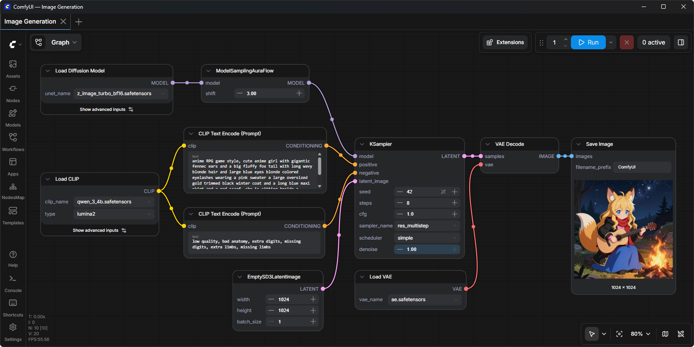

Imagem & vídeo local
Stable Diffusion, ComfyUI, Fooocus e InvokeAI.
5 links
| Vídeo | Projeto | O que faz | Pasta de origem | |
|---|---|---|---|---|
| Como instalar e usar o Stable Diffusion em 6 min |  | AUTOMATIC1111/stable-diffusion-webui | 165.3k★ · a interface mais conhecida para gerar imagens no PC. | curado — busca na internet |
| Comfyui para iniciantes: tudo o que você precisa |  | Comfy-Org/ComfyUI | 146.5k★ · imagem e vídeo por nós, rodando local. | curado — busca na internet |
 Baixar e Instalar a Fooocus AI - inteligência ar Baixar e Instalar a Fooocus AI - inteligência ar |  | Lllyasviel/Fooocus | 53.9k★ · imagens com IA sem mexer em mil configurações. | curado — busca na internet |
 Invoke AI - Come Installare Invoke AI (tutorial) Invoke AI - Come Installare Invoke AI (tutorial) |  | invoke-ai/InvokeAI | 29k★ · studio de imagem local com canvas e inpainting. | curado — busca na internet |
 Como instalar o Qwen 3.8 - IA SEM CENSURA LOCAL, Como instalar o Qwen 3.8 - IA SEM CENSURA LOCAL, |  | PurpleDoubleD/locally-uncensored | 4k★ · estúdio local: chat, imagem e vídeo sem filtro. | PROGRAMAÇÂO IA AGENT / GITHUBS / VARIADOS |